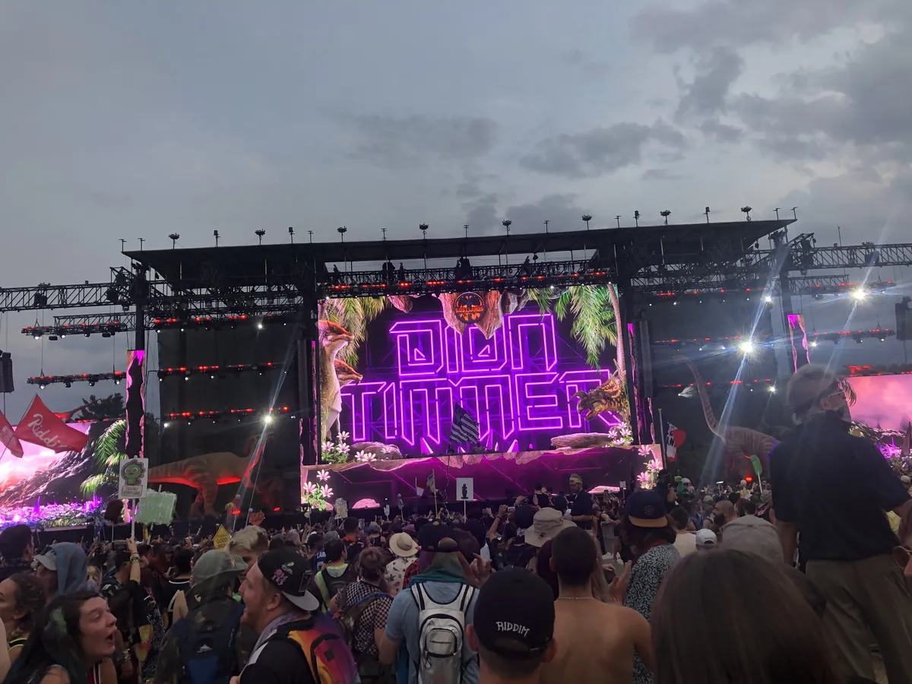
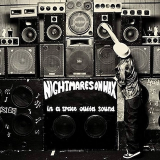

Festival guide, 2027
The best bass music festivals in 2027
The main bass music festivals in Europe and North America compared by place and setting, from five days on the Croatian coast to camping weekends in Ohio and British Columbia, with the 2027 dates that are confirmed and the ones that are not.
A list meant for choosing.
Bass music festivals sit on both sides of the Atlantic. In Europe, Outlook Origins brings UK sound system music to the Croatian coast for five days, while Boomtown in Hampshire and Bassfest in Sheffield are English summer weekends. In North America, the season runs from Bass Coast in British Columbia in July to Lost Lands in Ohio in September and Wakaan in Arkansas in October. This page compares the best bass music festivals for 2027 by place and setting, and shows which dates are confirmed. For the music itself, see the bass music guide.
How this list was chosen.
A festival is on this list when these three things are true:
- Bass music is the core of the programme, or the festival presents itself around it.
- It has run recently, and it has either published a 2027 edition or given no sign of stopping.
- It adds something the others lack, such as another country, setting or size.
A date from the festival's own site is shown as confirmed. A date taken from a ticket seller is marked as listed. Where a festival has not yet announced 2027, the table gives its 2026 date as a guide.
Bass music festival dates for 2027 at a glance.
July is the busy month. Bass Coast, Bassfest, Outlook Origins, Shambhala and Sound Haven all fall between 9 July and 1 August 2027, and Outlook Origins and Shambhala overlap from 23 to 26 July.
| Festival | Where | 2027 dates | Setting | Best for |
|---|---|---|---|---|
| Bass Coast | Merritt, British Columbia | 9 to 12 July | Camping, limited capacity | An artist-owned weekend |
| Bassfest | Sheffield | 17 and 18 July (listed) | Outdoor bowl | Two days in Sheffield |
| Outlook Origins | Tisno, Croatia | 22 to 26 July | Seaside site, boats | Five days by the sea |
| Shambhala | Salmo River Ranch, British Columbia | 23 to 26 July (sold out) | Ranch | A ranch weekend, if you hold a ticket |
| Sound Haven | Tracy City, Tennessee | 29 July to 1 August | Camping | Stages that never clash |
| Boomtown | Matterley Estate, Hampshire | 11 to 15 August | Country estate | A large weekend in England |
| Bass Canyon | George, Washington | 13 to 15 August | Amphitheatre | The Gorge |
| Lost Lands | Thornville, Ohio | Not announced (18 to 20 September in 2026) | Camping | Dubstep at scale |
| Wakaan | Mulberry Mountain, Arkansas | Not announced (1 to 3 October in 2026) | Mountain camping | The end of the season |
Which are the best bass festivals in the UK and Europe?
The European list has five days by the sea in Croatia and two festivals in England.
Outlook Origins, Croatia
Outlook Origins is held at The Garden Resort in Tisno, on the Croatian coast, on 22 to 26 July 2027. The festival describes its music as UK sound system music in all its forms. The week includes boat parties, and the after-parties are at Barbarellas in Pirovac. For the other festivals on the same site, see the best music festivals in Croatia.
This is Youngsta and J:Kenzo with Crazy D at Outlook Origins in 2025, from the festival's own channel.
Boomtown, Hampshire
Boomtown is held on the Matterley Estate, near Winchester in Hampshire. The 2027 edition, Chapter Six, is on 11 to 15 August. It is for ages 18 and over, and its stages run from dub and reggae to techno. See the Boomtown guide.
Bassfest, Sheffield
Bassfest Summer Festival is held at the Don Valley Bowl in Sheffield's Olympic Legacy Park. The 2027 edition is listed for Saturday 17 and Sunday 18 July, for ages 18 and over. The music is bassline, house and drum and bass. For the rest of the British summer, see the best dance music festivals in the UK.
Which are the best bass music festivals in the US and Canada?
Most of the North American festivals here are camping weekends, from British Columbia to Tennessee.
Bass Canyon Music Festival, Washington
Bass Canyon is held at The Gorge Amphitheatre in George, Washington. The 2027 edition is confirmed for 13 to 15 August. For how it sits among the bigger American festivals, see the best EDM festivals in the USA.
Sound Haven, Tennessee
Sound Haven is held at Jaceland, near Tracy City, Tennessee, on Thursday 29 July to Sunday 1 August 2027, for ages 18 and over. The festival says its stages run one at a time, so no two sets clash, and there is no curfew. General admission was on sale at $239 plus fees in November 2026.
Bass Coast festival, British Columbia
The Bass Coast festival is held at Merritt, British Columbia, on 9 to 12 July 2027, with early admission on 7 and 8 July. It is for ages 19 and over. Bass Coast is independent and artist-owned, and it keeps its capacity limited.
Shambhala, British Columbia
Shambhala is held at the Salmo River Ranch in British Columbia, on 23 to 26 July 2027, and that edition has already sold out. More on Shambhala and Bass Coast is in the best EDM festivals in Canada.
Where are the best dubstep festivals?
The two dubstep music festivals on this list are both in the United States: Lost Lands in Ohio and Wakaan in Arkansas. In Europe, dubstep plays at Outlook Origins inside a wider bass programme. For the music and its history, see the dubstep guide.
Lost Lands, Ohio

Lost Lands is Excision's festival, held at Legend Valley, near Thornville, Ohio. The 2026 edition, on 18 to 20 September, booked more than 200 DJs around a dinosaur theme. It is for ages 18 and over, and the 2026 tickets sold out. The 2027 dates have not been announced. It also appears in the best EDM festivals in the USA.
Wakaan, Arkansas
Wakaan Music Festival is held on Mulberry Mountain, near Ozark, Arkansas, by Liquid Stranger and the Wakaan label crew. It books dubstep and experimental bass. The 2026 edition was on 1 to 3 October, and the 2027 dates have not been announced. It is for ages 18 and over.
For drum and bass festivals, Rampage Open Air among them, see the best drum and bass festivals.
Not on this list, and why.
These two fall outside the tests above.
- NASS. The festival at Shepton Mallet cancelled its 2024 edition, and no 2027 date was found.
- Dub Camp. The festival at Lac de Vioreau, near Nantes, held its 11th edition on 10 to 12 July 2026. It is a reggae and dub sound system festival, and it has no 2027 date yet.
How to choose.
Pick the side of the Atlantic first. In Europe, choose Outlook Origins for five days by the sea, Boomtown for a large weekend in England, and Bassfest for two days in Sheffield. In North America, choose Bass Coast for a smaller, artist-owned weekend, Sound Haven for stages that never clash, Bass Canyon for the Gorge, and Lost Lands or Wakaan for dubstep.
Then look at the calendar. Outlook Origins and Shambhala overlap in late July, and Sound Haven starts three days after Outlook ends. Check dates with the festival before you book travel, because Lost Lands and Wakaan have not yet published 2027.
Bass music festivals FAQ.
What are the best bass music festivals?
Outlook Origins in Croatia (22 to 26 July 2027), Boomtown in Hampshire (11 to 15 August) and Bassfest in Sheffield in Europe. In North America, Bass Coast in British Columbia (9 to 12 July), Sound Haven in Tennessee, Bass Canyon in Washington, and Lost Lands in Ohio.
What are the best dubstep festivals?
Lost Lands in Ohio and Wakaan in Arkansas are the two on this list built around dubstep. Neither has announced 2027 dates. In 2026 they were on 18 to 20 September and 1 to 3 October.
When is the Bass Coast festival in 2027?
The Bass Coast festival is on 9 to 12 July 2027 at Merritt, British Columbia, with early admission on 7 and 8 July. It is for ages 19 and over.
Sources.
- 2027 dates from each festival's own site: Outlook Origins (and its FAQ), Boomtown, Bass Coast (and its FAQ), Shambhala, Sound Haven (and its FAQ), Bass Canyon.
- Bassfest 2027, listed: the Skiddle ticket page and FAQ.
- Past editions and age limits: Lost Lands and its ticket page, Wakaan.
- Lost Lands 2026: EDM Maniac. Wakaan 2026: EDM Identity.
- NASS: Skiddle. Dub Camp 2026: JDS.
- Boomtown and the Canadian festivals: this site's guides, linked above, which cite their own sources.
Continue reading
Read next.

Digging~10 min readHow to Find New Music: 10 Ways That Are Not an Algorithm
Ten ways to hear something you have not heard before, from community radio to record credits, ordered by how much work they take.
Read article → Digging~12 min read
Digging~12 min readBest Boiler Room Sets of All Time, Ranked and Measured
Eighteen sets picked for what happens in them, beside the ten most-watched, counted across 8,206 Boiler Room recordings.
Read article → Festivals~13 min read
Festivals~13 min readWhat Is Burning Man? The Event, the City and the Music
A participant-built city in the Nevada desert, with no central lineup or main stage, and the sound camps and art cars that programme their own music.
Read article → Rave spots~10 min read
Rave spots~10 min readBest Clubs in Berlin: The Legends and the Ones Still Open
The rooms that made Berlin a techno city, the famous clubs that closed, and the best clubs in Berlin that are still open.
Read article →